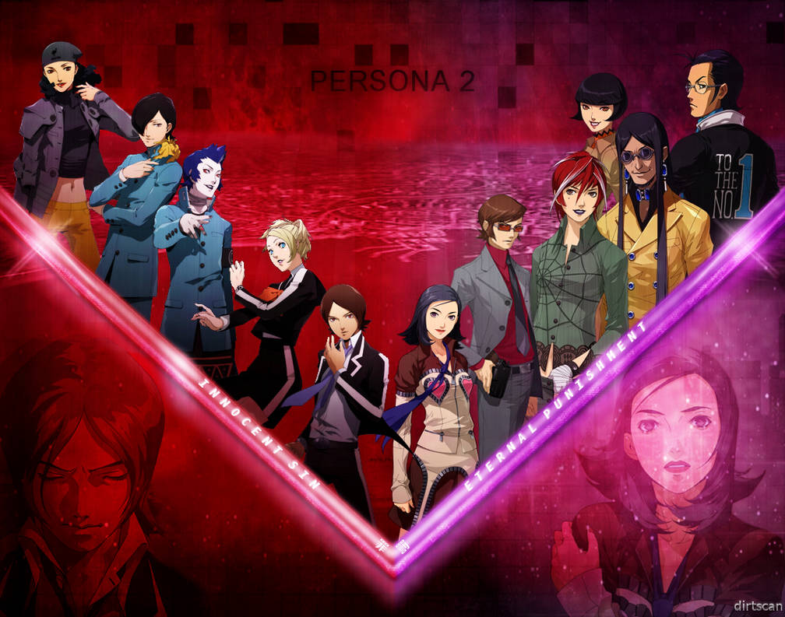
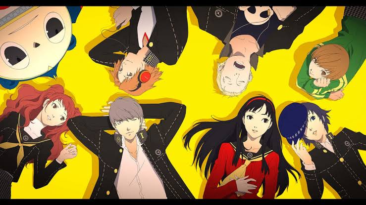

.jpeg)
A franquia Persona (originalmente batizada no ocidente como Shin Megami Tensei: Persona) é uma das séries de RPG mais populares do mundo, desenvolvida pela Atlus e de propriedade da Sega. O que começou como um derivado (spin-off) focado no público jovem acabou superando a sua franquia de origem em popularidade global.
• Persona 1 (1996): Lançado originalmente como Megami Ibunroku Persona (e Revelations: Persona no Ocidente) para o primeiro PlayStation. É ideal contar no site como ele nasceu como um derivado sombrio de Shin Megami Tensei focado no público jovem, mas sofrendo muitas alterações culturais na sua primeira localização ocidental.

• Persona 2: Innocent Sin (1999) e Eternal Punishment (2000): Uma duologia única na franquia. Vale criar um artigo especial no seu site explicando como esses dois jogos separados se complementam explorando o impacto de boatos que viram realidade, além de curiosidades como a censura do antagonista baseado no ditador alemão em relançamentos.
• Persona 4 (2008): O jogo responsável por explodir a popularidade global da série com um mistério de assassinato na pacata cidade de Inaba. É um ótimo gancho para listar os primeiros grandes spin-offs que expandiram a marca, como o jogo de luta Persona 4 Arena Ultimax e as adaptações para anime.